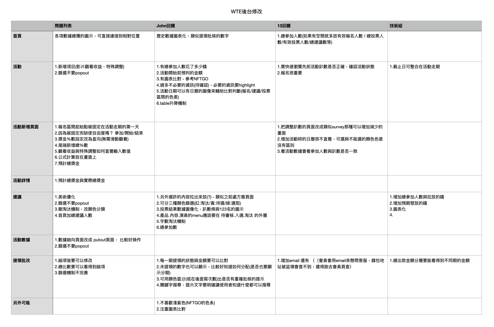

Always take time to find the data.
My supervisor and other colleages told me the backstage system is hard to use, but they counld currently explan the reason why they counld not used confortably. There is a main issue that they all faced - Always take time to find the datas.
Roles
Researcher / Prototype / Coding
While optimizing the backstage system, I took two days to figure out the system's flow. Be more careful to ensure I will get all customer data. Then, I started to interview my supervisor and other colleagues about the difficulties that they were facing. During the prototyping process, I used HTML, CSS, and JS to co-work with the back-end engineers to finish this project.
Interview
Need Finding
-
Intuitive data oraganization
Some relevant data need to be more scattered. Even they need to switch different pages to count or compare. - Having too much repeated and unnecessary information.
- It was hard for customer service to find the customer's information.
-
Monthly activity building page.
We have the watch to earn activities for customers monthly, so we need to create a page for colleagues to add new activities or posts fluently. -
Optimize the voting system of the monthly activity.
During every monthly activity, our colleagues in our development the top 10 favorite comments from the customers. But the previous system didn't have the filter function, so it also took us lots of time to browse trash comments.
Optimize
-
Understeadable charts.
Combining the primary data with the homepage was the main task for this project. So, I incorporated the preliminary data that my colleagues needed into several charts. -
Organize the information in the table.
After the interview, I organized the primary data and deleted the repeated data. To ensure the users can easily find the data they need and compare the information. -
Simplify the filter systems.
Simplify the unnecessary functions in the popout filter box into the three selection buttons. Also, I turned the hotchpotch data on the activity page into product, content, and actor categories. -
Automatic fill-information
We have added the function of automatically filling in data, such as dates and some fixed data, to reduce manual errors and improve work efficiency.